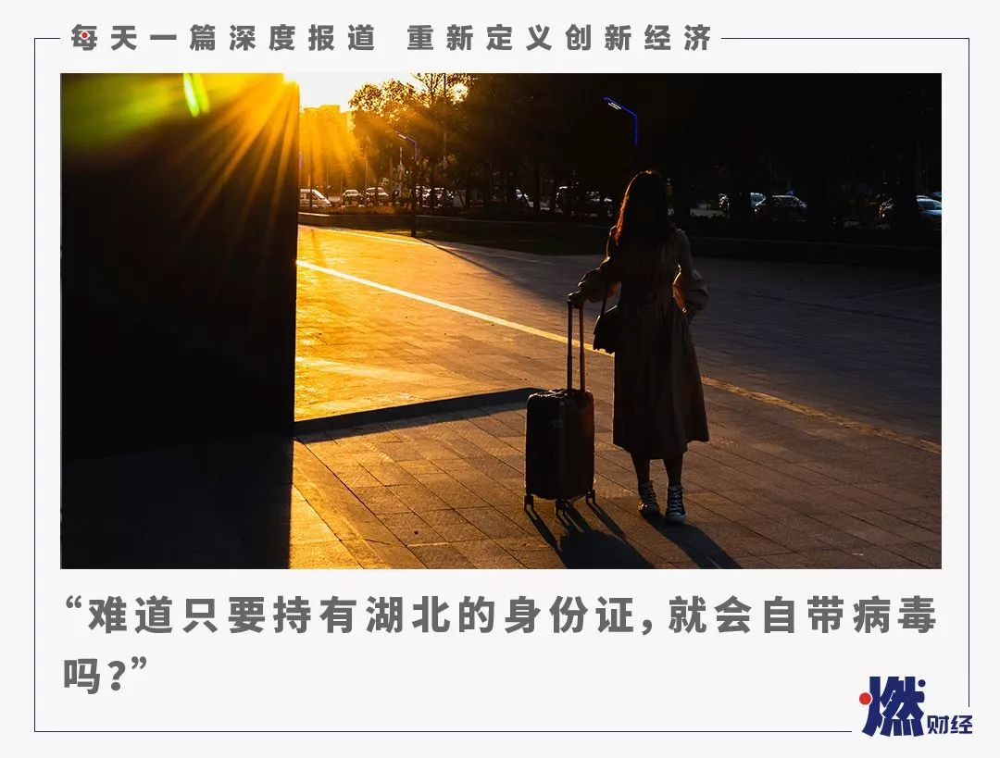
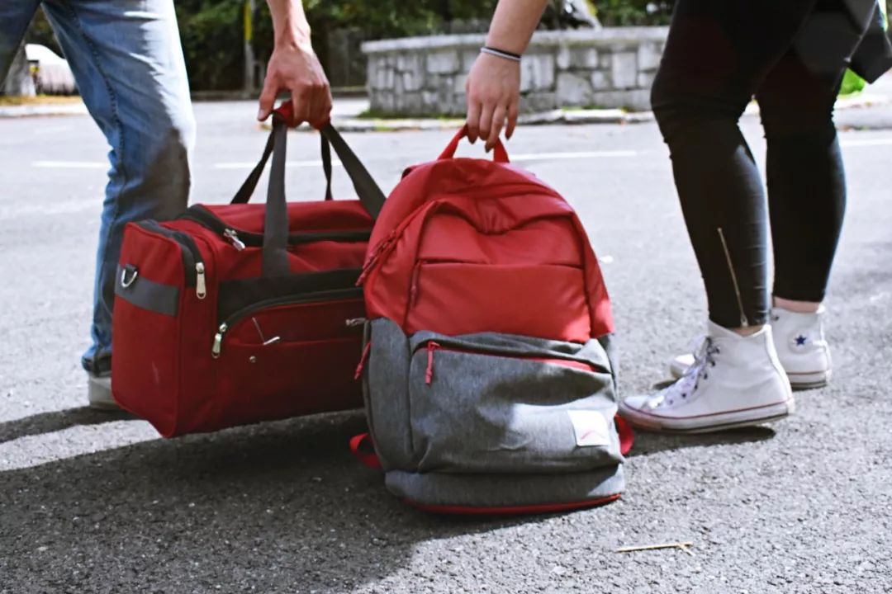

这个春节，每个人都不容易
原文链接 备份链接 昨天，我们发起了征集，请身在疫区的同胞、奋战在疫情第一线上的医护人员、全国各地留守家中防疫的人们讲述这个春节发生的真实故事，在后台收到的近百份留言中，我们筛选并刊登如下，我们是倾听者，也是见证者—— 01 这个春节，是 …

《战疫口述记》，是燃财经在新型冠状病毒肺炎期间推出的特别栏目，记录疫情亲历者的观察和感受。本文为第3篇，查看前2篇请点击《农村这样防肺炎》《我在武汉战肺炎》。
作者 | 苏琦 金玙璠 孟亚娜
唐亚华 孔明明 魏佳
编辑 | 魏佳
500多万，这是武汉市长周先旺1月26日晚在新闻发布会上给出的离开武汉的人口数字。这个数字背后是一个个普通人的故事，他们在这个春节各有各的遭遇，尤其是对于那些湖北籍的人来说，感受尤为深刻。
这些人中，有的是外出探亲，有的是出国旅游，有的是单纯在外地工作。在武汉封城之前，他们没预想到这次疫情会这么严重，政府当时也没宣布“人传人”的消息。
离开前还没什么大问题，一夜之间天就塌了。他们被迫留在外地，和家人分隔两地，有家不能回。家里有空巢老人和孩子的，也只能干着急。不仅如此，他们经历了各种各样的歧视、漠视、无处可去和语言暴力。
有的人3个月没回过湖北，安检员就是不允许“42”开头的身份证乘客登机；有的人带湖北男友回老家，在家自我隔离的同时，还得忍受邻居们的疏离和嘲讽；有的人在封城前出国，直飞武汉的航班取消有家回不去，在外地隔离14天想“自证清白”，但没有机构能给他们出示证明。
疫情并不是一座城市居民的错，此次，燃财经采访了多位在春节期间流浪在外的湖北籍人士，听他们讲述了自己的经历。
“难道只要持有湖北的身份证，就会自带病毒吗？”“现在大家好像不是隔离病人，而是隔离武汉人。”他们想要，被正常对待。
***来京探亲差点露宿街头***
***现在在酒店被隔离***
白芸 27岁 湖北荆州籍
1月22日，我和小姨从湖北荆州来北京探亲。当时钟南山教授已经公布疫情有人传人现象，我们也考虑过是否取消行程，但想着表妹一个人在北京过年，未免有点凄凉，我们就做好了防护，全程戴着口罩、手捏酒精棉准备赴京。
在武汉机场，我们接受了红外线体温扫描，到了首都机场，也有防疫中心逐一检测体温，都没什么问题。
1月23日早上，我们得到消息说武汉封城了，疫情严重性升级，我和小姨按要求，在表妹家进行了自我居家隔离。
随着形势越来越严峻，差不多整个湖北的海陆空路线全部暂停，我们原本计划初四坐飞机回家，航班被直接取消。
既来之则安之，我们只能抱着这种心态在家宅着，每天早晚测体温，保证自己的安全，不会传染给周围的人。
然而我和小姨一直挤在表妹租的房子里也不是个事儿，她的室友也快回来上班了，肯定不愿意我们住在这里，所以我开始着手找酒店。
寒心之旅就从这儿开始——酒店一听是湖北人，直接回了3个字：不可以！在网上看到消息说武汉大学校友企业东呈国际集团旗下的酒店接收湖北人入住，酒店从1月27号一直到2月5号都是满房状态。我们打市长热线12345，客服建议找派出所，派出所建议找救助站，救助站表示不愿意接收……
* *
*
偌大一个首都，竟然找不到一个我们能住的地方？小姨因为着急上火口腔溃疡，我们也不敢出门，在网上买了点清火降热的药。本来好不容易带长辈来一趟首都，肯定要去天安门看一眼，现在连小区楼下的公园都没见过。她第一次出远门就遇上这种事，这两天晚上愁的夜夜失眠，有一天早上起来说梦到自己走路回家了。
1月28日中午，海淀区的民警帮我们安排了一个酒店，这个酒店应该是专门给离汉人员住宿的，食宿不要钱。只是民警带我们过来办入住时，门口有一位中年女性问我们22日离开武汉，是不是听说了要封城所以逃出来的，非常戳心。
酒店要求我们不能出房门，得隔离满14天。工作人员会把饭放在门口的板凳上、敲门，我们再拿进来吃。
我爸现在在老家，我妈在武汉，一家三口分隔3地。好在家人一切都好，他们本来十分担心我和小姨，得知已经找到酒店住下，才松了一口气。
这个春节，来北京不过才6天，却仿佛已经过了好久。我们想回家，希望疫情尽快好转，道路解封，我们就能回去和家人团聚了。
武汉的疫情并不是我们的错，我自己是做外贸服装生意，有好几个国家的客户听说了疫情都发邮件和微信过来问候，相比之下我们自己人却在网络进行言语攻击。语言是一把利刃，网络上的言语我可以不听不看，但是这两天遭遇的各种冰冷拒绝和怀疑让人很心寒。
***现在好像不是隔离病人***
***而是隔离武汉人***
吴羡 28岁 湖北武汉籍
我们夫妇一直在北京上班，12月31日在微信群里看到疫情相关的消息，以为是谣传，还是按原计划1月18日飞回武汉过年，待了三天，20日晚上启程去普吉岛玩。路上我们还是比较小心的，在机场和飞机上全程戴着口罩，我印象特别深的是，我以为两边机场会有检查措施，但是工作人员都没有戴口罩，也没有测量体温。
原计划25日回武汉。结果23日在岛上玩的时候就收到武汉“封城”的消息。接着又收到了航班取消的消息，人在国外不知道武汉什么情况，联系了国内的亲友，他们提议让我们多待几天，等“解封”了再回去，但是我们心系家中父母和孩子，就想着必须得回去。
我们开始电话、网上联系南航客服，因为事出突然，太多人蜂拥导致航空公司网络系统崩溃，就只能不停地打客服电话，来来回回沟通联系了将近两天，再加上已经先飞回广州的朋友说广州一些酒店已经拒绝让武汉人入住这个事实，我们想那只能回北京了。当时网上查南航是有飞北京的转机的，但是南航以改签只能改直飞，而南航没有直飞北京的航班为由拒绝了，最后只答应给我们改签到广州或者深圳。
他们的电话真的很难打进去，偶尔打进去了也是说要请示上级再给我们回话，就这样花了好几百国际漫游话费，最后我们只能妥协先飞广州回国再说。
26日，我们到达了广州，在飞广州的路上，和我们同样情况的朋友建议坐高铁到武汉附近的城市，在经过武汉站时请求列车长让下车，我们不敢冒这个险，到时候高铁不停，把我们拖到另一个城市还是一样的窘境。于是我们立马定了初二高价飞回北京的机票，北京家里的钥匙因为在武汉的家里，我们就在网上下了顺丰单，准备落地后先找家酒店住下等第二天钥匙寄过来。
到达北京酒店开始办入住的时候，前台没戴口罩，看到我们身份证后说“问问经理”，出来就戴了口罩，还好接待了我们，也配合量了体温，问了情况说会帮我们报备给当地派出所，接下来就安心入住了。
我们时刻关注着顺丰这边情况，发现订单异常，理由是只寄医药物资。我们给站点打电话，快递员说，可以寄，但是不上门收件。我让家里老人把钥匙送到站点，顺丰还是不收件，以不是医药物资拒收，但是顺丰官网明明发的公告是可以寄三公斤以下的民用物资，后来打了客服电话投诉才勉强让家里老人把钥匙裹在口罩里当作医药物资寄出来，第二天11点多我们看钥匙还未到准备续住时，酒店突然通知说要封店，所有人都不能住了，我们马上在飞猪上订附近另一家酒店，结果对方连单都不接，直接给我们退款拒绝入住。
实在没有地方去了，我们就报了警，派出所问了一系列信息以后让自行联系社区，社区又让联系居委会，我们同步也找了派出所备案的开锁公司询问了价格，结果平时200起步的价格已经抬到1000元起步了。后来我们居住地居委会说帮我们请示区领导。等了两三个小时没有回复，我们又打电话过去，最后说已跟酒店商量让我们再住一晚，如果我们钥匙第二天寄不到可以帮我们联系开锁的师傅。
第二天查顺丰物流未有信息，只能联系居委会帮忙开锁了。他们再三嘱咐我们，让我们不要跟他们有接触，让我们在楼下等着，他们开完锁到了楼下，我们再上去。接下来我们夫妻二人拿着行李箱站在电梯间等待，做卫生的阿姨戴着口罩在我们周围来来回回喷消毒水，还打听我们哪里来的。下电梯的人看到我们拿着箱子戴着口罩也绕着走。
这一路给我的感觉，现在大家好像不是隔离病人，而是隔离武汉人。我在“境外湖北人”微群里看到太多这样的例子了，有个内蒙古人，因为用的是武汉手机号，平台就不让预定酒店；还有一个妈妈带着小孩去山东，因为上飞机的时候说了句武汉话，同行的人就不愿意和她们同一架飞机，没办法只能改签。
我这两天在微博看到一些内容，完全看不下去，我们武汉人难道就是过街老鼠吗？这场疫情就发生在武汉，受害者首先是武汉市民，我们也挺委屈的，可是又能怎么办。像我这样在外地还有个落脚地的还好，那些只有武汉一个家的回不去的只能滞留。
我和老公在这一个礼拜过了一个特殊的春节，现在刚刚踏进北京的家门，目前自行隔离中，家中做了卫生消了毒，没有出门，外卖了一些粮食和蔬菜，每天给居委会报备身体情况。现在只有一个想法，等武汉情况好些疫情过了，能够回武汉看看长辈亲戚，然后把孩子接回北京，一切回归往常，国泰民安！
*****带湖北男友回广西老家*****
*****天天被村里盘问*****
安安 27岁 广西籍（男友为湖北襄阳籍）
我男朋友在武汉上班，他是襄阳人。春节，我们约定好了一起，从武汉出发回我老家广西。
我是在1月22日凌晨到的武汉站，也就是封城的前一天，当时没感觉到会封城这么严重，只是感觉大家都有点怕怕的。大多数人都带着口罩，老年人带的比较少。凌晨3点多的时候，我们打了辆出租车去武昌站转车。在车上，出租车司机说他感觉挺害怕，但钱还得赚，所以不得不认真带着口罩上岗。
回到村里以后，邻居见着我们都感觉带着恐惧，打招呼都保持很远的距离，有生以来我第一次有一种孤立无援的感觉。早知道这么严重，我们就不回老家了，现在觉得在武汉待着挺好的。
村里倒是没人上门登记，起初每天都有人打电话，问我爸妈我们两个的情况。年前，病情还没有大规模爆发，家里也没有被隔离，只是邻居们不往来了。年后，村里每天都给我们两个打电话，不停地询问我们从哪儿回来的、经过哪里、停了多久，最后告诉我们，别出门，同样的话反复说，搞得我们很烦。

我感觉村里虽然对外来人口查得很严，但不重视预防措施和对疫情科普宣传，感觉是不停地在制造恐慌。现在信息流通太快了，村里的人在网上看到一些信息，就觉得非常害怕，但村里的干部也就只是打电话通知，并不做科普。真要找个人来问这是个什么病、什么原理，几乎没几个知道的。而且网上那些信息也是很难分辨真假，所以现在感觉有点迷茫，不知所措。
我们俩真的是非常委屈，我们是有携带病毒的可能，但并没有人能够实际有效的指导我们，只能自行隔离，还得忍受邻居们的疏离，倒不如直接把我们抓去医院隔离起来舒心。同时我们其实也很担忧，因为天天跟父母呆在一起，家里还有个两个月的婴儿。我家里人其实也怕被传染，但是可能担心我们心里负担大，尽量什么都不说。我妈天天和别人解释，我们没有经过汉口站，经过的是武汉站和武昌站。
我男朋友的爸妈在湖北老家，也是各种封路封街，每天只能互相打电话聊天解闷。他爸妈晚上十一点多才敢戴着口罩去楼下走走。我们俩现在还没定具体的返程时间，本来买了初七的票也不知道能不能回去，我觉得就算我去了公司也不会让我去上班。

***父母病了没法回武汉照顾***
***同学群里有人大哭***
王旭 39岁 湖北武汉籍
我是一名在北京的创业者，因为工作关系1月19日回到武汉，原计划一直待到年后回京，但是疫情发展太快，考虑到年后公司运行情况，22日离开武汉返回了北京，一直自己在家隔离。
我当时回到武汉的时候，街上极少数人戴口罩，餐馆都爆满，有一天晚上我还和朋友们出去踢了球。我觉得这个直接导致了后面的快速传染，大家完全没有重视，因为当时说的是可防可控，不存在人传人。
21日开始，大家才意识到严重性，戴口罩和减少户外活动。对于人员的流动性问题，我觉得外界有一个很大的误解。武汉人早期的流动，是因为政府并没有说事情的严重性，信息不对称。武汉作为一个中心城市，本身的流动性在那儿放着，很多常驻武汉的人口不是当地人，他们每年都要回家过年，所以网上传500万人流动传播疫情完全是不可理解的指责。
即使封城的时候，引起了一些恐慌，有一群人出城，但所有人都有自己选择，像我和一些同学当时是有条件在封城前给父母买到机票或火车票离开的，但父母都选择留在武汉，他们不愿意出来，把所谓的病毒带给后辈。
在那个时候，因为有巨大的恐慌，那些“不要到处乱蹿”等刺耳的语言，我觉得是很没有人性的说法，非常不公平，特别是带上地域标签。
封城前我有亲戚离开武汉，但因为开着鄂A车牌的车，在郑州被强行扣下在酒店隔离了，要观察14天。还有一个同学年前报的旅行团，在封城之前离开了武汉，也被隔离在外地了。也有同学因为武汉封城了回不去，但武汉身份证又开不了酒店，没有地方住。

封城以后类似我父母这样的空巢老人现在生活状态也不好。我爸妈一次出去买东西也扛不了太多，公共交通都停了，没有车也没法大规模集中采购，盒马、京东这些现在也都不能送货上门，他们只能吃一些年前为春节准备的存粮。
我还有同学的父母，已经出现一些病症，交通管制去医院都去不了，好多武汉同学想回武汉回不了，照顾不上父母，急得在我们同学群里大哭。前天我们得到消息说高铁在武汉可以停靠站点，可以下人，有两个同学已经回武汉去照顾老人了。更严重的是，有老人发烧几天，未能确诊入院，后来进了医院已经晚了，还无法确认是不是新冠肺炎就走了，走的时候身边没有亲人。封城以后，保障体系没有建立起来，这是非常可怕的事情。
现在我们再去指责谁也没有什么用，能够做的就是大家怎么力所能及的做点事把疫情控制住。我们的校友会也都在自发组织一些物资调配。到现在为止，这已经不是武汉的事情，而是一个全国性事情，再去抱怨，没有任何意义。
另外疫情可能会影响到我公司的正常运行，我们现在也在商讨异地办公的可能性，我觉得这是对每一个企业的考验。一些行业也会有大的变化，像我们教育行业，所有的线下机构、工具类和内容类的项目可能都会发生变化，年后我们会按照实际情况应对。

*****想14天后“自证清白”*****
*****但没人给我们出示证明*****
杨桃 28岁 湖北武汉籍
我们是19日出的境，提前三个月已经订好了去新加坡旅游的机票。出发前几天我天天刷武汉卫健委的官网看通告，政府当时也没说不可控和人传人，没预想到会这么严重。出发时政府通报的确诊人数是2位数，刚落地确诊人数为3位数了。那时也是机场开始检测体温的第一天。
从12月31日政府第一次通告起，我出门已经开始戴口罩，并且要我爸妈也戴，但是在我走之前的18日，大街上没几个人戴口罩，18日之前我还坐过一次地铁，地铁上很多咳嗽感冒的人，不超过五个人戴口罩，其中还包括我。
我之前在北京工作，这几年才回的武汉，所以我身份证地址是北京，护照也由北京签发。我们本来应该26日坐新加坡酷航回来，但在登机前被酷航拒绝登机，因为我爸妈的护照是湖北签发。
当时我们在机场认识了十几个人，都是这种情况。后来我们到处打电话询问情况，最后买了东航的航班，直接飞了昆明，因为昆明暖和，并且和我们原本的航班时间很接近。出发之前我先预订民宿，民宿老板直接拒绝，后来我用自己的身份证预订了酒店。
云南是从27日下午才确定把武汉人统一安置酒店的。当时我们从新加坡回来的一群人飞的地方不同，政策也不同，我们进昆明的时候还没人管。28日我们自己来了集中收治的酒店住，希望过了14天之后能自证清白，按照时间算我们还有6天就过了隔离期。但问了这里的医护人员和警察，他们都不能提供过了14天的隔离证明。
我现在在酒店，不敢随便出门。酒店会打电话逐个问我们情况，我都会如实交待，我们现在没有症状，也配合体温检查，警察和医护人员都很好。但这里的酒店前台戴的都是棉口罩，连我都担心他们的防护问题，可是昆明已经买不到口罩了。
有几个在外漂的朋友，因为没有航班回武汉，都在想办法开车回去。我认识的一家人落地长沙，在长沙花了两三千块包车回去，因为在外面被寒了心；还有一家人本来已经从云南跑到重庆，也正准备一路开车回去：那家人老公是山西身份证，可以住酒店，但老婆孩子因为是武汉身份证住不了，最后只能报警，由政府安置。

我们出去的时候，新加坡航空全体空乘都戴了N95，我和爸妈也全程戴口罩，但其他人基本都没戴，我们回来的时候，东航的空姐都没戴N95，一位老奶奶问她为什么不戴，她说买不到，而且是这几天才让戴，之前不让戴。她们是高危人群，我觉得应该由航空公司统一发放口罩。
我们现在不知道要在这里呆多久，只能过一天算一天，有家谁不想回？在外都是漂泊，但昆明要到正月十五以后才有飞武汉的航班。本来我们本着对社会负责的态度想着隔离14天后可以自由一些，但不给我们证明，走到哪里都是歧视。
其实政府如果能够统一政策，我肯定接受并且配合。在新加坡机场时我已经准备好下机被隔离
，但没想到结果是不让飞；好不容易飞了，但到昆明之后却没地方住。这几天发生太多事情了，心态是慢慢崩掉的。
当时听到武汉封城的消息时，第一反应是不能回家了怎么办？武汉走的时候还好好的，怎么变成这样了？在新加坡时，我每天看新闻到深夜，几乎天天哭。在昆明机场的时候我又大哭了一场，每天都像做梦，特别魔幻现实主义，感觉很委屈。但其实委屈过后也就好了，现在就是走一步算一步。

*没回过湖北*
*因为身份证是“42”开头就被拦下*
菲比 31岁 湖北孝感籍
从大年初二开始，我每天都能感受到外界对我的“格外关心”。
我在北京已经工作了7年，今年是我和我老公新婚，按照习俗要回男方老家过年，年前我跟着他一起从北京回了绵阳，结果大年初二返京时，我在绵阳机场安检时被拦下，因为我的身份证上是湖北籍。
我向安检员出示了我在航旅纵横和12306上的信息，可以证明最近三个月我没有回过湖北，而且我在机场测了体温也正常，但是安检员不听我解释，坚持说接到的通知就是不允许身份证号码是“42”开头的乘客登机。
后来经过地勤人员协调，发现是安检员理解有误，目前只拦420（武汉）开头的身份证，我这种湖北其他地方的人可以放行。我登机之前，安检员还开玩笑似的说了一句“你真的是太倒霉了”。相比之下，我觉得那些跟我一样在外地工作的武汉人才是倒霉，家都没回过，到哪儿却都要像过街老鼠。
闹了这么一出，我在飞机上一直很紧张，快到北京时，空姐让每个人填入京登记表，我填身份证号那一栏的时候紧张得手一直发抖，生怕邻座的人发现我是湖北人，然后围攻我。表填完以后，我如坐针毡，空姐每走过来一趟，我的心就提到嗓子眼，就怕是来找我。还好，最终我顺利到达北京并回到家中。

但这一切只是开始，先是物业打电话来问我春节有没有回老家，家里有没有湖北的亲戚来。年前，我妈妈从湖北来北京看我，我让她不要出门自我隔离，到现在已经快十天了，我如实做了说明。紧接着是社区给我打电话，让我和我妈妈每天上报体温，我都予以配合。然后我不断接到新的电话让我们补充信息，比如乘坐的交通工具、经过哪些车站等等。连续三天早上叫醒我的，都是不同的陌生电话号码。
每天我都会关注家乡的疫情，孝感是武汉之外确诊人数第三多的城市，前几天我老家的小区有个住户被确诊感染，她从一有症状开始就上报了社区，还在业主群里发了信息，向大家表示抱歉，并提醒大家注意防护。其实家乡人民真的没想添乱，但这波舆论真的让我很难受，尤其是前几天很多湖北人的身份证号、联系方式被公布出来，有的人还收到了谩骂信息。
现在我最困惑的就是，即便我们在家自我隔离了14天，也没有任何机构给我们出具证明，我们出门时还是会受到特别对待，难道只要持有湖北的身份证，就会自带病毒吗？
我真的希望能这场疫情能早点过去，我的工作性质需要经常出差，但我不知道我还能不能正常乘坐飞机、正常入住酒店。

隔离在贵阳的宾馆
在线帮助武汉医生找免费房源
李越 30岁 湖北武汉籍
我现在在贵阳一个酒店里住着，整个酒店几乎只有我一个客人。
之前年底比较忙，我一直在外面出差，已经两个月没回去了。本来就等着赶在除夕之前回去，没想今年过年，竟然回不了家了。
因为我户籍是武汉的，公安第一时间联系我了，问最近有没有回过武汉，我出示了我所有的出行记录，显示最近两个月都在贵阳跟深圳，没时间回家。
1月23日，我是早上8点的飞机准备赶回武汉，5点起床已经赶到机场了，告诉我航班取消，看到封城的消息当时我就哭了。主要还是担心爸妈和老婆孩子，我女儿今年2岁，这是第一个我不在她身边的春节。
回到酒店之后，我赶紧采购了一波东西，泡面、零食、水、口罩这些。这边的口罩缺货已经很严重了，外面的药店都基本上卖光，N95级别的根本买不到，只有普通的口罩。
整个贵阳市一共就472.18万人，武汉的流动人口都比它多，这边其实本来就比较封闭，所以我也几乎不和外界来往。
贵阳的冬天比较冷，我最近还有点小感冒，为了避嫌，我只能天天呆在酒店里面，一次也没出门。贵阳唯一确诊的一例和我在一个区，离我直线距离七公里远，为了自己的健康，也为了避免不必要的争端，我就自己把自己关在酒店隔离起来了。

年夜饭我是自己在酒店吃的，泡了一碗泡面，加了两根双汇火腿肠。肯定还是非常想家里人的，关在酒店，除了打打dota，每天最盼望的就是和家人视频了。
虽然人不在家，我心里还是非常挂念武汉的情况。我有一帮朋友，发现武汉本地很多群里，会有一些宾馆想要免费提供房源给需要的医护人员休息用，消息很多很杂，有些重复和更新不及时的情况，双方没法对接。
他们就将这些信息录入到后台，统计房源具体地址（具体到门牌号）、房间数、可接待人数和联系人信息，再将附近可覆盖的医院或医疗机构输入进去，进行匹配。这里面有大量的信息添加、确认和沟通对接的工作，都是人工操作的，我反正也是闲着，就在帮忙。
目前大概汇集了100多处房源，对接了100多位医护人员，数据还在增加。我们是自发的民间组织，还是存在信息更新不及时的情况，有些核心区域和偏远地区，房间也比较紧缺。
我原本玩说唱，武汉的一些说唱歌手，其实也在自发的捐赠和运输物资，大家其实都在出力。
出了问题最后其实谁也跑不了了，骂人是没用的，自怨自艾也没有用。只能说，能做一点是一点。
武汉还有很多独居老人、贫困家庭，他们怎么办？他们接受信息比较慢，还有流浪汉不知道发生了什么，只能去垃圾桶捡别人戴过的口罩，这些都是真实的事情，需要靠每一个武汉人，不管是在外地还是留在城内的人，一起解决。尽自己所能做一些实事，相信慢慢的一切都会变好。
*题图及文中图片来源于Pexels。应受访者要求，文中吴羡、安安、杨桃、菲比、李越为化名。

“流浪”在外的湖北人，你有哪些经历？
欢迎在评论区留下你的故事，我们会在点赞前三（超过20个）的评论里挑选一位网友，送出爱奇艺季卡一张。文章转载请点击公众号菜单“转载合作”。
一手资讯/硬核报告/每日红包/线下活动！就差你了！快加微信rancaijing01回复“读者”一键上车！


燃财经工作室
点个在看吧😘
微信扫一扫赞赏作者 赞赏
长按二维码向我转账
点个在看吧😘
受苹果公司新规定影响，微信 iOS 版的赞赏功能被关闭，可通过二维码转账支持公众号。
原文链接 备份链接 昨天，我们发起了征集，请身在疫区的同胞、奋战在疫情第一线上的医护人员、全国各地留守家中防疫的人们讲述这个春节发生的真实故事，在后台收到的近百份留言中，我们筛选并刊登如下，我们是倾听者，也是见证者—— 01 这个春节，是 …
原文链接 备份链接 *************▲************* 四川省巴中市巴州区，一辆鄂A车牌（武汉）轿车的车窗上，贴着红岩社区加盖公章的证明，称车主无感冒发烧现象，且正在家自行隔离。 （杜茂林/图） 全文共*4201*字， …
原文链接 备份链接 据相关数据统计，春节前，有近500万人离开武汉，他们中有近30%的人离开湖北，他们或出差、或进行计划许久的旅行，或回家过年，但伴随着疫情的加剧，他们成了一群「不被欢迎的人」。 一位武汉的小学老师已经连续三年去厦门过年， …
原文链接 备份链接 这段时间，除了关于疫情本身的讨论，一些新的话题不断加入。单读征文今天的来信，来自一位选择离开家乡的武汉人。武汉人在外省的处境令人堪忧，从直面病毒的恐慌，到遭遇歧视的愤懑，武汉人不仅是这场疫情中最直接的受害者，还成为后续 …
原文链接 备份链接 本文故事来自一名化名为“平安”的武汉大学生，记述了她从返乡、封城，再到过年所经历的种种。这个特殊的春节，焦虑与希望同在，寂静与喧嚣并存。身处「风暴中心」，从慌乱到乐观，她的心理发生了什么样的变化？让我们一起来看看她过去 …